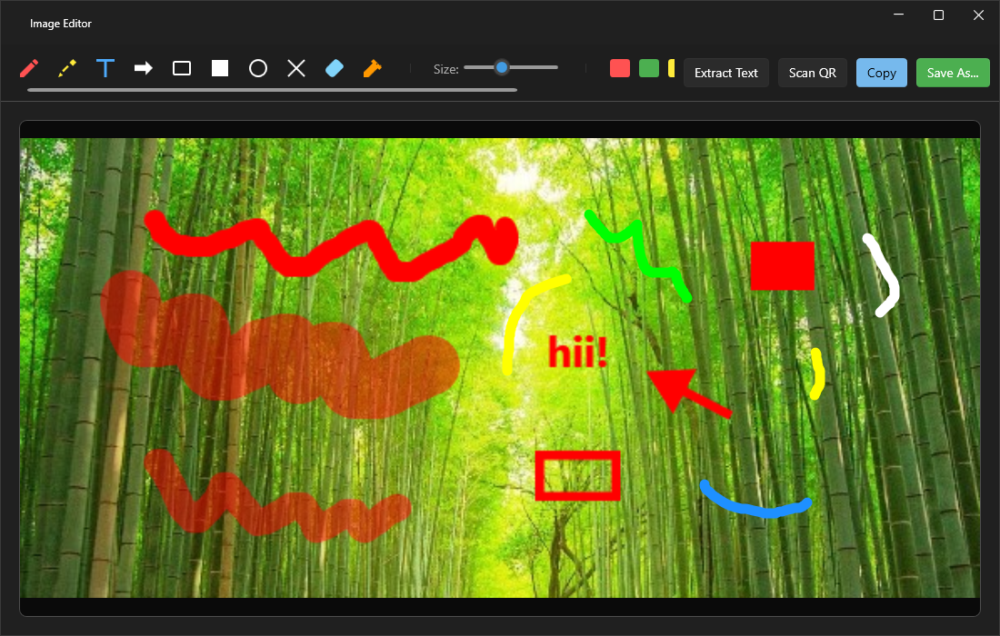
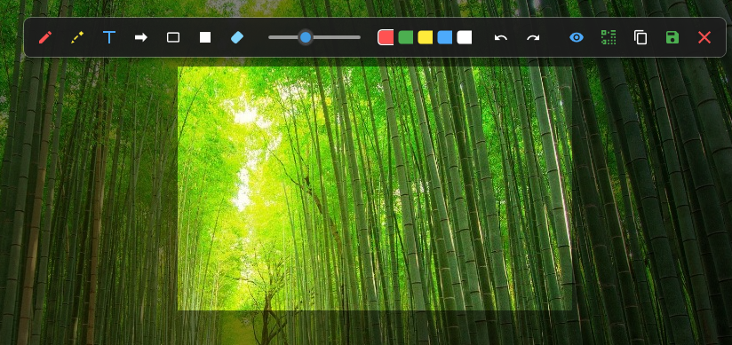
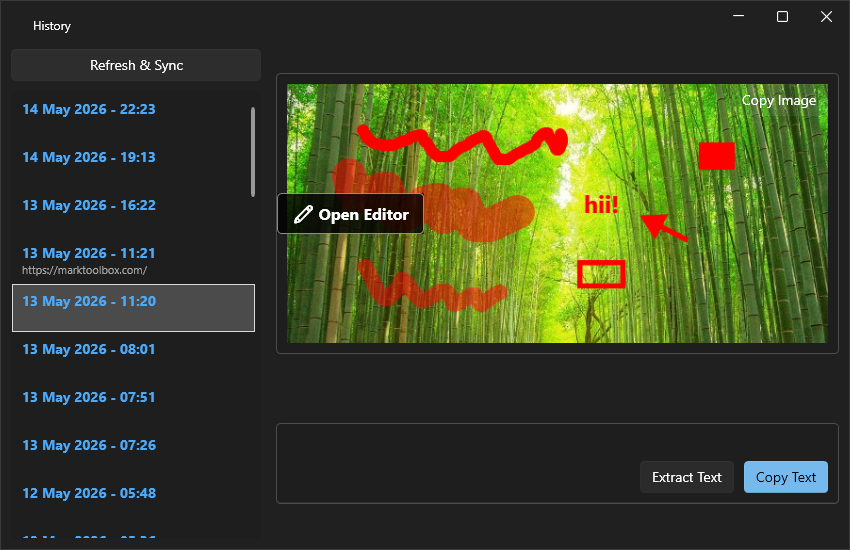
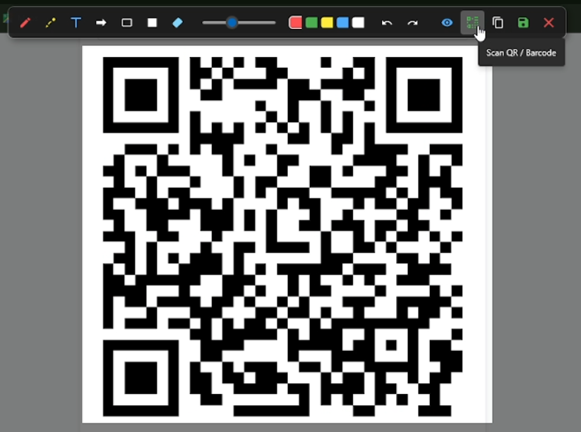
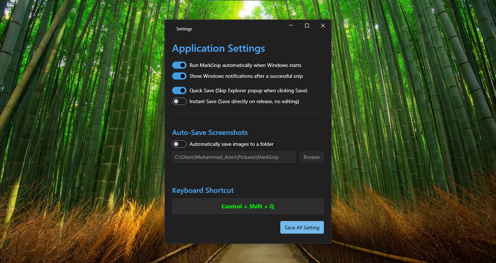
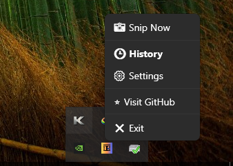
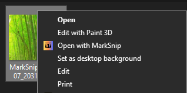

Why settle for basic screenshots? MarkSnip is a native, offline-first desktop utility that lets you extract text (OCR), scan QR codes, and annotate directly on your screen without opening heavy editors.

MarkSnip provides everything you need to capture, annotate, and extract data from your screen without interrupting your workflow.
Freeze your screen and annotate instantly. Use pens, add text, draw arrows, and use redaction blocks to hide sensitive info before saving.

Never lose a screenshot again. MarkSnip logs your recent captures, allowing you to revisit past snips, extract text from them, or re-edit them anytime.

See a QR code in a video or website? Just snip it! MarkSnip instantly decodes the matrix into clickable text or URLs directly from your screen.

Remap your global keyboard shortcuts, enable Instant Quick Save to bypass dialogues, or set up an Auto-Save directory for rapid-fire screenshotting.

Runs silently in the background with zero bloat. Launch a new snip, access your history, or tweak settings instantly right from your Windows taskbar.

Need to extract text or draw on an image you already saved? Just Right-Click any picture in File Explorer and select "Open with MarkSnip" to bypass the snipping phase completely.

| Keyboard Shortcut | Action Triggered |
|---|---|
| Ctrl + Shift + Q | Start Snipping Mode (Global Hotkey) |
| Ctrl + C | Copy cropped image (or extracted text) to clipboard |
| Ctrl + S | Save annotated image to File Explorer |
| Ctrl + Z / Y | Undo / Redo drawing annotations |
| Esc | Cancel snip and close the transparent editor |
As developers, students, and professionals, we capture our screens dozens of times a day. While the default Windows Snipping Tool is adequate for casual users, it severely lacks advanced workflow capabilities. MarkSnip was explicitly built to eliminate friction.
Cannot copy text from a protected PDF, a YouTube video, or a Zoom meeting presentation? Our application integrates Optical Character Recognition (OCR) directly into the selection tool. Instead of snipping an image, opening a web browser, and uploading it to an online OCR service to extract the text, MarkSnip processes the binary image data locally in milliseconds.
Privacy is at the core of the MARK_Tools ecosystem. When dealing with sensitive corporate emails, source code, or banking information, taking a screenshot and pasting it into cloud-based apps is a massive vulnerability. MarkSnip operates entirely offline. It uses the native Windows 10/11 API to perform text extraction, ensuring that your screen data is never transmitted to an external server. What happens on your machine, stays on your machine.